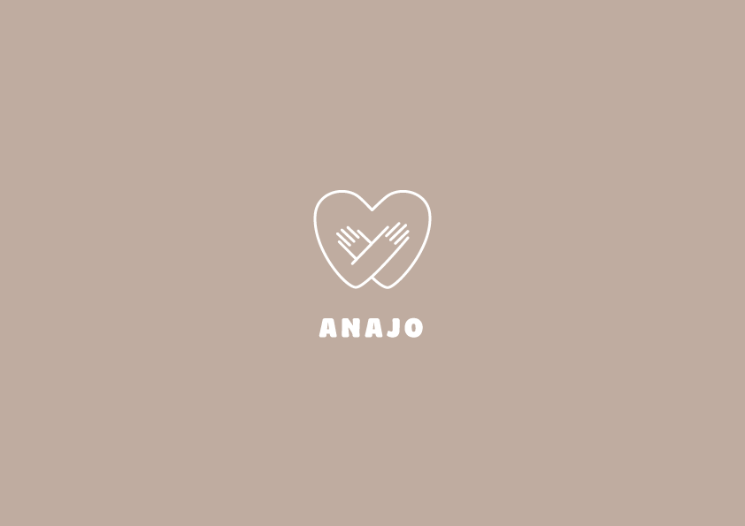
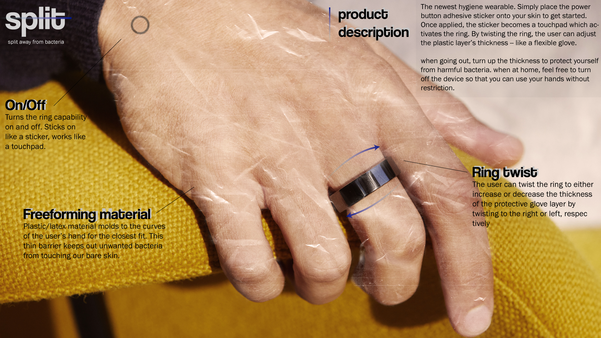
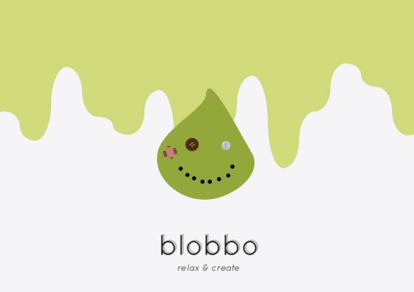

35 second kinetic type video of HONNE's Just Dance.
Different motion design techniques were used to create this project. I conducted a lot of research of various transitions to make the piece more upbeat and appealing to watch. Timing the movements to the beat of the music was also quite challenging.

#physical prototype
#wireframing
#group project
Hugging pillow prototype made using the theme of transmission >< reception. Created in a team of 4 people.
Promotional video: https://youtu.be/vpiWhA5nqQ8
The overall theme of our Anajo pillow was to connect people in difficult times when they cannot be with their loved ones, which COVID-19 is currently the cause of. Below a file of our full process is available. It is a glimpse of the overall process we took to get to the final product that is presented in the above video.
Fictional product image inspired by the COVID-19 pandemic. When the ring is twisted, a thin glove-like material forms on the skin of the user's hands to form a barrier against bacteria.


#user research
#wireframing
#visual design
Interactive toy project intended for haptic play that is accompanied with mobile app.
Our prompt was to make an interactive toy. The basis of Blobbo is that it is a customizable slime toy with added features, like textured pieces or scent sprays. The Blobbo toy comes with an app companion and a whiteboard platform with a scanner. These tools allow the user to draw items and scan them into the app along with their slime creation to play minigames and collect many collectibles.